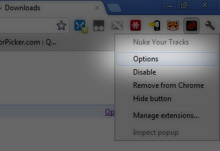

Nuke Your Tracks : Welcome
Overview
Welcome! Nuke Your Tracks allows you to delete your browsing data in one click of a button!
- To begin, go to the options page by right clicking on the Nuke Your Tracks icon and clicking options.
- You can then select the type of browsing data you would like Nuke Your Tracks to remove.
- To activate Nuke Your Tracks, click on the Nuke Your Tracks icon on the extension menu. All of the browsing data you have selected from the options menu will be automatically deleted.
